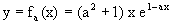
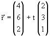
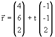
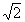
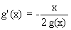

| KANTONSSCHULE REUSSBÜHL | Maturitätsprüfungen 1998 (Be / Es) |
M a t h e m a t i k Typus C
Bemerkungen: Jede Aufgabe soll auf einer neuen Seite begonnen werden.
Zeit: Drei Stunden.
Jede vollständig gelöste Aufgabe wird mit maximal 10 Punkten bewertet.
Für 40 Punkte wird die Note 6 erteilt.
Hilfsmittel: DMK Formeln und Tafeln, Taschenrechner TI-82 (graphikfähig).
1. Gegeben ist die Funktionenschar  mit positivem, reellem Scharparameter a.
a) Berechnen Sie a so, dass der Hochpunkt des dazugehörigen Graphen die Abszisse 2 besitzt.
b) Bestimmen Sie die Menge aller Extremal- und Wendepunkte der Schar.
c) Wie heisst die Gleichung derjenigen Kurve, auf der alle Hochpunkte der Schar liegen?
d) Jede Kurve der Schar und die x-Achse begrenzen im I.Quadranten ein ins Unendliche reichendes Flächenstück. Wie gross ist sein Inhalt in Abhängigkeit von a? Hat dieser Inhalt für a → ∞ einen Grenzwert? Wenn ja, welchen?
2. Lösen Sie die zwei voneinander unabhängigen Teilaufgaben:
a) Am Kantifest will die Klasse R7 ein Glücksspiel
anbieten. Ein Spieler soll einen Franken Einsatz zahlen und darf dann einmal drei ideale
Würfel miteinander werfen. Zeigt der Wurf genau zwei gleiche Augenzahlen, wird der
Einsatz zurückbezahlt. Zeigt der Wurf drei gleiche Augenzahlen, so werden sechs Franken
ausbezahlt. Bei drei verschiedenen Augenzahlen verliert der Spieler seinen Einsatz.
Mit welchem Verlust muss ein Spieler pro Wurf im Mittel rechnen?
b) In einer grossen Tombola sind 40% der Lose Gewinnlose.
b1) Mit welcher Wahrscheinlichkeit zieht ein Käufer von 10 Losen mindestens zwei Gewinnlose?
b2) Adam und Eva kaufen abwechselnd Einzellose, bis jemand von ihnen einen Gewinn zieht. Adam beginnt. Mit welcher Wahrscheinlichkeit gehört das Gewinnlos Eva?
b3) Jemand behauptet, der Anteil der Gewinnlose sei kleiner als 40% und will dies mit einer Stichprobe von 25 Losen untersuchen. Formulieren Sie eine Hypothese und geben Sie einen Verwerfungsbereich auf dem 95%-Signifikanzniveau an.
3. Gegeben sind die zwei sich im Punkt S schneidenden Geraden a:  und m: .
a) Wie gross ist der Winkel zwischen a und m?
b) Berechnen Sie den Mittelpunkt M einer Kugel k mit Radius r = 5 so, dass M auf a liegt und m Tangente an die Kugel ist. Dabei sei M diejenige der zwei Lösungen mit kleinerer z-Koordinate. Geben Sie auch die Koordinaten des Berührpunktes T auf m an
c) F sei der T diametral gegenüberliegende Punkt auf der Kugel k. Wie heisst die Gleichung der Tangentialebene E an k in F?
d) S sei Spitze, a Achse und m Mantellinie einer geraden Kreiskegelfläche. Die Ebene E von Teilaufgabe c) schneidet diese Kegelfläche in einer Parabel mit Brennpunkt F. Bestimmen Sie die Gleichung der Parabelachse und den Scheitelpunkt.
4. Gegeben sind die linearen Abbildungen ak durch x' = kx + (k-3) y, y' = (k-3) x + ky mit reellem k.
a) Für welchen Wert k0 ist die Abbildung a k0 nicht affin ?
b) Zeigen Sie :
für alle k ≠ k0sind die Geraden g: x + y = 0 sowie h: x - y = 0 Fixgeraden von ak .
c) Für welche Werte k ist ak eine Ähnlichkeitsabbildung ? Charakterisieren Sie präzis zu jedem gefundenen Wert k die dazugehörige Abbildung.
d) Setzen Sie nun k = 2 .
Beschreiben Sie den Abbildungstypus und die Eigenschaften
von a2 .
a2 bildet den Einheitskreis x2 + y2 = 1 auf eine
Ellipse ab. Bestimmen Sie von dieser Ellipse eine Koordinatengleichung, die Längen der
Halbachsen sowie die Koordinaten der Brennpunkte.
5. Lösen Sie die zwei voneinander unabhängigen Teilaufgaben:
a) Eine Kurve in der Gauss-Ebene hat die Parameterdarstellung z = x + iy = - cos t + 2i sin t - i (mit reellem Parameter t ).
Bestimmen Sie die parameterfreie Darstellung dieser Kurve sowohl in kartesischen Koordinaten als auch in der komplexen Schreibweise. Welches ist der höchste Punkt dieser Kurve?
b) Lösen Sie die beiden Differentialgleichungen
und 
c) Zeigen Sie, dass jede Lösungskurve der einen Differentialgleichung jede Lösungskurve der anderen Differentialgleichung unter einem rechten Winkel schneidet. Skizzieren Sie für beide Differentialgleichungen je eine Lösungskurve mit selbstgewählten Werten C1, 2 ≠ 0 für die Integrationskonstanten.